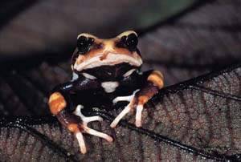

<body text="#000000" bgcolor="#FFFFFF" background="bg311.gif">

ЖАБА ЖИВОРОДЯЩАЯ (Nectophrynoides occidentalis) длиной 20—30 мм. Ее биология была впервые изучена в 1942 г. в Гвинее на хребте Монт Нимба (Восточная Африка). Она живет по горным лугам на высоте 900—1600 м. Жаба выбирает места, где под почвой есть породы, имеющие трещины, дающие животному убежище. Температура воздуха в местах обитания этой жабы не опускается ниже 12°. Однако при этой температуре жабы уже малоактивны и перестают кормиться. Только при 20° живородящая жаба оживленно кормится. Излюбленная ее пища — муравьи и пауки. Очень редко поедает моллюсков и червей. Период засухи с декабря по февраль животное неактивно и проводит забравшись в трещины скал или зарывшись в почву. Первыми покидают убежища взрослые самки, начинающие веети активный образ жизни с конца февраля. Затем в течение марта — апреля появляются неполовозрелые особи и наконец самцы. Это единственный живородящий вид всего отряда бесхвостых. Яйца развиваются в нижнем расширяющемся отделе яйцеводов. На свет появляется вполне сформировавшаяся жаба. Каждая самка несет от 1 до 22 зародышей, чаще их бывает 4—12. Развитие зародышей происходит за счет желтка, запасаемого в крупных яйцах. В дыхании эмбрионов, видимо, принимает участие хвост, богатый кровеносными сосудами. Массовое рождение детенышей приходится на начало июня, но продолжается до конца месяца, а если период дождей затягивается, то и до начала июля. В июле и августе наблюдаемся максимальная активность жаб. В конце августа часть взрослых самок перестает встречаться. Их исчезновению предшествует спаривание, начинающееся в августе и достигающее максимума в сентябре — октябре. Спаривание происходит днем, может продолжаться и ночью. Оно длится от нескольких часов до целого дня. Самцы держатся при этом неподвижно, а самки неутомимо переступают с лапы на лапу. Оплодотворенные самки сразу же прячутся в убежище, где и проводят весь период засухи. К концу периода дождей, в сентябре — октябре, а в некоторые годы и в ноябре, достигают зрелости трехмесячные самки. Оплодотворяясь, они также прячутся в убежища. Дольше всех остаются активными некоторые не достигшие зрелости самки и самцы, забирающиеся в убежища последними. Не достигшие зрелости самки оплодотворяются в следующий сезон, пятнадцати месяцев от роду. Самки, как правило, размножаются два раза в жизни и оставляют потомство в общей сложности из 18—20 особей. Живородящие жабы составляют значительную часть животного населения высокогорных лугов. В мае на высоте от 1400—1650 м выше уровня моря их численность достигала 150—160 особей на 100 м?. В августе и сентябре плотность их увеличивается до 400 экземпляров на 100 м?, причем молодых в это время вдвое больше, чем старых. Численность эта довольно постоянна и на протяжении 5 лет мало изменилась. Исключение составляют очень засушливые годы (например, 1946), когда численность сокращается наполовину или даже на три четверти от первоначальной. 